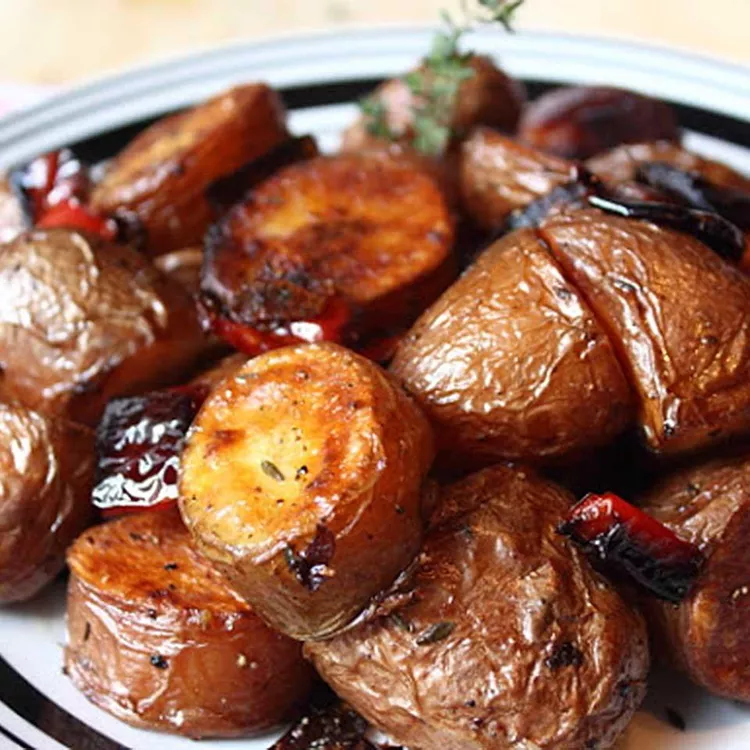

Roasted Red Potatoes
This red skin potato recipe is a go-to side dish. You have to do only a
few things, and if you do those things, we're talking intense potato side
dish pleasure! The best roasted red potatoes start with a heavy roasting
pan, a generous amount of olive oil, and enough time to roast the potatoes
until dark and rich.
Ingredients
- ¼ cup olive oil, or more if needed
- 2 pounds red potatoes, cut into evenly sized pieces
- ½ large red bell pepper, seeded and cut into 1-inch pieces
- 5 fresh thyme sprigs, or to taste
- kosher salt and freshly ground black pepper to taste
- 1 pinch cayenne pepper, or to taste
Steps
- Preheat the oven to 400 degrees F (200 degrees C).
-
Pour olive oil into a heavy baking dish (such as an enameled cast iron
dish). Place potatoes into the baking dish and toss to coat. Sprinkle
with red bell pepper, thyme sprigs, kosher salt, black pepper, and
cayenne pepper.
-
Bake in the preheated oven for 30 minutes. Toss vegetables to turn over.
Some potatoes may stick; don't try to turn them. Return to the oven and
bake for 20 more minutes.
-
Toss vegetables again, turning potatoes so the unbrowned sides come into
contact with the bottom of the dish. Continue baking until potatoes are
browned and tender, about 15 more minutes.
-
Turn the oven off and leave potatoes in the oven for 15 more minutes.
Toss once more. Season with salt, black pepper, and cayenne pepper
before transferring to a serving bowl.